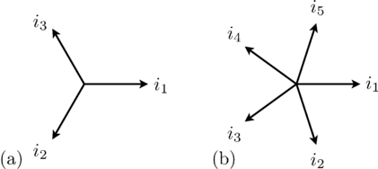
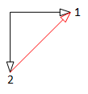

Modelica.Electrical.Polyphase.UsersGuide
Modelica.Electrical.Polyphase.UsersGuide
Modelica.Electrical.Polyphase.UsersGuide
Modelica.Electrical.Polyphase.UsersGuideThis library contains components for modelling of polyphase electrical circuits. The number of phases m is not restricted to three. The connector (named plug) contains an array of m single-phase pins. Most of the components use an array of single-phase components from Modelica.Electrical.Analog.
For the orientation of an arbitrary number of phases m > 3, see the phase orientation concept.
Extends from Modelica.Icons.Information (Icon for general information packages).
| Name | Description |
|---|---|
| Orientation of phases | |
| Contact | |
| Release Notes | |
| References |
Modelica.Electrical.Polyphase.UsersGuide.PhaseOrientationIn polyphase systems, the angular displacement of voltages and currents of the phases as well as the spatial displacement of machine windings have to follow the same rules, i.e., they are based on the same orientation function.
A symmetrical three-phases system consists of three sinusoidal sine waves with an angular displacement of 2 π / 3.
In symmetrical polyphase systems odd and even phase numbers have to be distinguished.
For a symmetrical polyphase system with m phases the displacement of the sine waves is 2 π / m.
|  |
In case of an even number of phases the aligned orientation does not add any information. Instead the m phases are divided into two or more different groups (the base systems).
The number of phases m can be divided by 2 recursively until the result is either an odd number or 2. The result of this division is called mBase, the number of phases of the base system. The number of base systems nBase is defined by the number of divisions, i.e., m = nBase * mBase.
For a base system with mBase phases the displacement of the sine waves belonging to that base system is 2 π / mBase.

|
The displacement of the base systems is defined as π / nBase.
In array or matrices, the base systems are stored one after another.
For each base system of time phasors, symmetrical components can be calculated according to the idea of Charles L. Fortescue.
The first symmetrical component is the direct component with positive sequence.
In case of mBase = 2, the second component is the inverse component with negative sequence.
In case of mBase > 2, the components [2..mBase - 1] are components with non-positive sequence,
and the last component [mBase] is the zero sequence component.
This set of symmetrical components is repeated for each of the nBase base systems.
For polyphase systems, star connection of the m phases is unambiguous, i.e., each pin of the plug is connected to the starpoint pin, whereas for polygon connection (mBase - 1)/2 alternatives exist (refer to Fig. 3).
|  |

|
| 2 phase system | 2 = 2 x 2 phase system |

|

|
| 3 phase system | 6 = 2 x 3 phase system |

|

|
| 5 phase system: 2 alternative polygon connections | 7 phase system: 3 alternative polygon connections |
Therefore, using the MultiDelta component, the alternative has to be specified by the parameter kPolygon.
User's guide on polyphase winding.
Extends from Modelica.Icons.Information (Icon for general information packages).
 Modelica.Electrical.Polyphase.UsersGuide.Contact
Modelica.Electrical.Polyphase.UsersGuide.Contact
Dr. Christian Kral
Electric Machines, Drives and Systems
1060 Vienna, Austria
email: dr.christian.kral@gmail.com
Anton Haumer
Technical Consulting & Electrical Engineering
D-93049 Regensburg, Germany
email: a.haumer@haumer.at
Extends from Modelica.Icons.Contact (Icon for contact information).
 Modelica.Electrical.Polyphase.UsersGuide.ReleaseNotes
Modelica.Electrical.Polyphase.UsersGuide.ReleaseNotesExtends from Modelica.Icons.ReleaseNotes (Icon for release notes in documentation).
 Modelica.Electrical.Polyphase.UsersGuide.References
Modelica.Electrical.Polyphase.UsersGuide.References| [Ceraolo2014] | M. Ceraolo and D. Poli; Fundamentals of Electric Power Engineering, IEEE/Wiley 2014, ISBN 978-1-118-67969-2. |
| [Mühl2017] | T. Mühl, Elektrische Messtechnik (in German), Springer Vieweg, 2017, DOI 10.1007/978-3-658-15720-3. |
| [Vaske1963] | P. Vaske, "Über die Drehfelder und Drehmomente symmetrischer Komponenten in Induktionsmaschinen," (in German), Archiv für Elektrotechnik vol 2, 1963, pp. 97-117. |
Extends from Modelica.Icons.References (Icon for external references).
Automatically generated Tue Feb 24 16:59:18 2026.